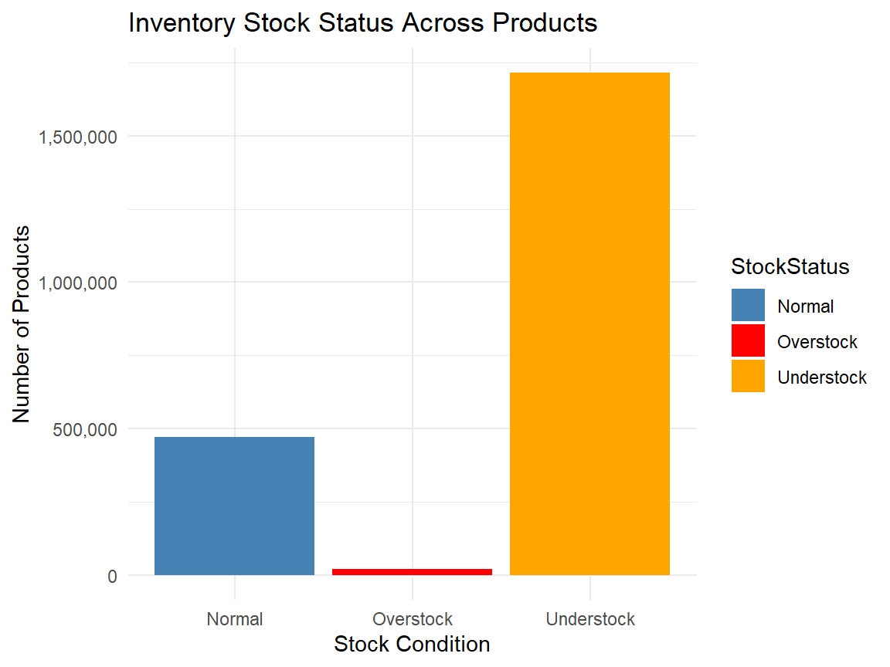

Inventory Efficiency in Washington’s Cannabis Supply Chain
An analysis of cannabis product inventory levels across Washington state
CCRS
Inventory
Product
The Bottom Line Up Front
Washington’s cannabis industry has matured past the expansion phase. The next era is defined by efficiency, precision, and accountability.
The CCRS data shows that survival moving forward will be determined not by how much producers grow — but how intelligently they align production with demand.
Inventory efficiency is no longer tactical - it’s strategic survival.
The Path Toward Smarter Inventory Strategy
Efficient operators should focus on:
Aligning plant creation with retail demand cycles, not seasonal assumptions
Using CCRS data to monitor cohort flow rather than production volume
Setting destruction thresholds before saturation occurs
Avoiding bulk speculative production beyond forecasted sell-through rates
Managing SKU rationalization continuously
Data shows that operators who treat plants as speculative assets rather than perishable inventory consistently underperform over time.
Concentration Risk: Where the Volume Is Sitting
The top 15 inventory items alone account for hundreds of millions of units in unsold material. The highest concentration categories include:
Bulk Other Plant Material Lots
Wet Flower (Unlotted)
Bulk Flower Lots
Fresh Frozen Flower Lots
Liquid Edibles in bulk batch form
Distillates and solvent concentrates
These product classes indicate that mass production strategies continue even when downstream absorption cannot keep pace.
This is not operational efficiency — it is volume speculation.
# Define thresholds (adjusting these is possible)
overstock_threshold <- 10000
understock_threshold <- 100
inventory_flags <- inventory_summary %>%
mutate(
StockStatus = case_when(
TotalOnHand >= overstock_threshold ~ "Overstock",
TotalOnHand <= understock_threshold ~ "Understock",
TRUE ~ "Normal"
)
) %>%
count(StockStatus)The Cost of Inefficiency
Inventory inefficiency directly results in:
Increased destruction events (financial loss)
Regulatory reporting burden
Compression of wholesale margins
Reduced brand differentiation
Higher risk of forced discounting cycles
In a mature market like Washington State, efficient inventory management is no longer optional — it is the defining factor separating viable operators from those bleeding capital.
Current Inventory Reality: A Stock Imbalance Snapshot
Inventory Condition Breakdown & Inventory Flags (Overstock & Understock
From the current inventory dataset of over 2.2 million inventory records, TECL identified the following stock condition breakdown:

While “Overstock” appears smaller numerically, the vast majority of inventory is misaligned relative to consumer flow, with understock and overstock occurring simultaneously — an indicator of poor inventory forecasting and over-centralized production behavior.
Why This Matters for Cannabis Data Democracy
TECL exists to empower licensees, policymakers, and stakeholders with transparent, actionable data. Inventory efficiency is not just a business concept — it is a market health indicator. By revealing where inefficiencies exist, we enable decision-makers to reduce waste, increase sustainability, and stabilize pricing ecosystems.
This is data democracy in action: replacing intuition with evidence.
Join the Discussion
Your insights help drive better transparency and smarter policy in Washington’s cannabis industry.